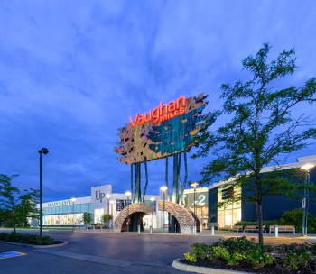
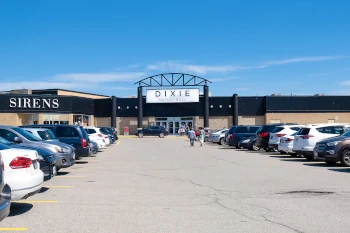
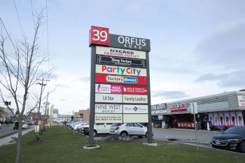

Até a chegada do Premium Outlet, o Vaughn Mills era a principal opção de outlet em Toronto. Confesso que na minha opinião, ele continua sendo o melhor! Antes de ir, eu sempre dou uma olhadinha nas promoções divulgadas no website. Outra vantagem do Vaughn Mills Mall é a proximidade do parque Wonderland, da Legoland e de Blue Mountain, ótimas opções para fazer um combinado de passeio e compras em qualquer estação do ano.
Por ser mais próximo da cidade, O Dixie Mall sempre aparece como a grande revelação para os turista, mas na minha opinião, a propaganda é enganosa. As lojas não são tão atraentes e a variedade não é o que esperamos de um outlet.
No estilo do Dixie Mall, mas mais pobretão, a Orfus Road tem a vantagem de ser praticamente na cidade e de fácil acesso a transporte público, masssss não vá esperando nenhuma brastemp!
O lugar é estranho, mas para quem busca barganha (não necessariamente das marcas mais famosas), pode encontrar coisas muito interessantes!
